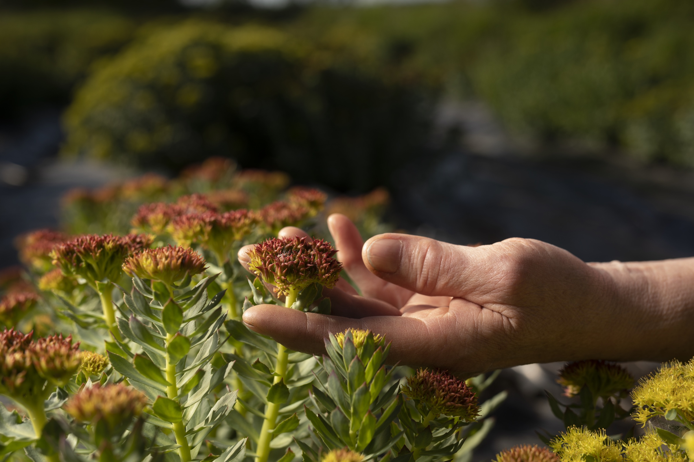
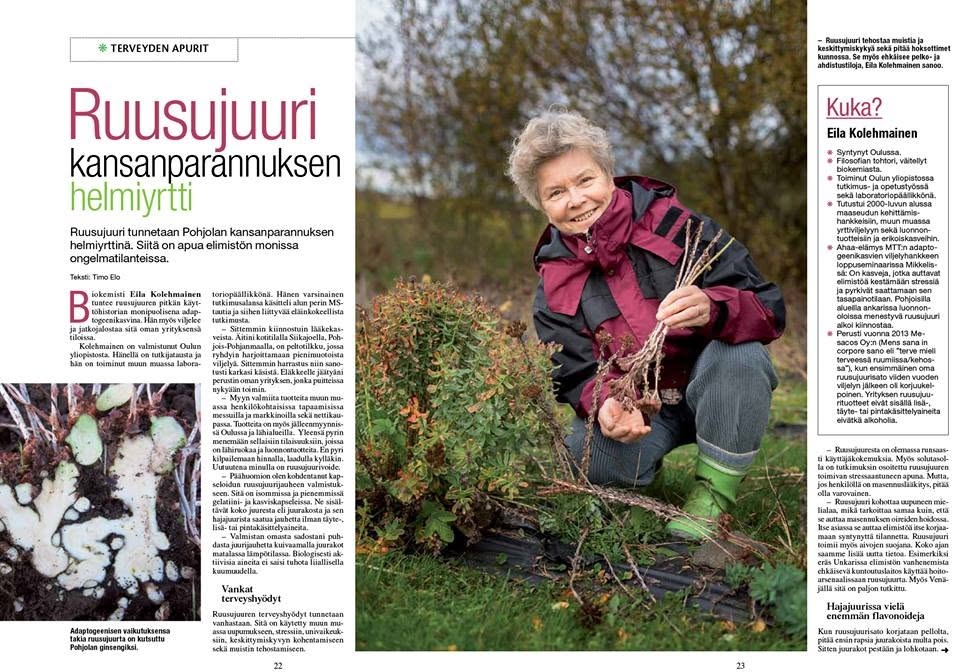
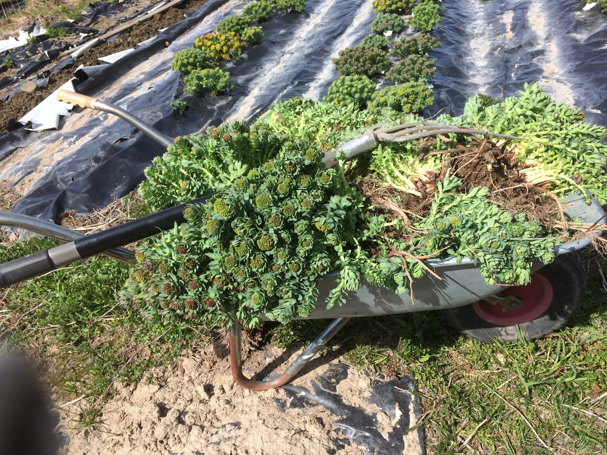
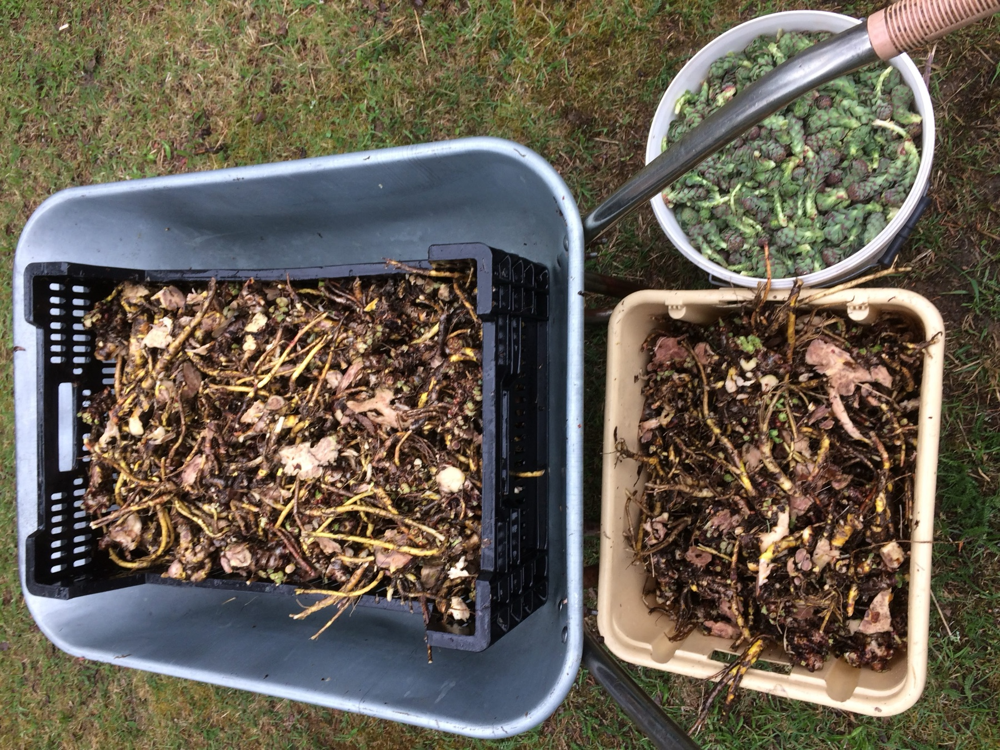

Iso kapseli
RodiStrong
11 g, gelatiinikapseleissa, 50 kpl/pakkaus. Auttaa elimistöä sopeutumaan fyysiseen ja psyykkiseen stressiin.
23,00 €
Osta

Kotimaista ruusujuurta Pohjois-Suomesta · vuodesta 2013
Karu ilmasto ja pitkä valoisa kesä pakottavat ruusujuuren keräämään poikkeuksellisen paljon vaikuttavia aineita selviytyäkseen. Me viljelemme, korjaamme ja jalostamme sen Pohjois-Suomessa — käsin, tilalta pakkaukseen.

“Ruusujuuri tehostaa muistia ja keskittymiskykyä sekä pitää hoksottimet kunnossa. Se myös ehkäisee pelko- ja ahdistustiloja.”
— Eila Kolehmainen, FT (biokemia), Mesacos Oy:n perustaja · Terveyden apurit -lehtiValitse tilanteesi — näytämme suoraan siihen sopivat tuotteet.
Kiireinen arki, palautumisen puute, keskittymisen herpaantuminen.
OpiskelijaTenttikausi, pitkät päivät, tarve pysyä terävänä.
Vaihdevuosi-ikäinenSuurempi annostus, pitkäjänteinen tuki tasapainoon.
Aamulla tai varhain iltapäivällä — muistiin, keskittymiskykyyn, tarkkaavaisuuteen tai liikuntasuoritukseen.
Stressiin, uupumukseen, väsymykseen ja alakuloon — päivittäiseen ruokaan sekoitettuna.
Mustikkaa, karpaloa, aroniaa, tyrniä ja mustaherukkaa + ruusujuurijauhetta. 1/2–2 tl/pv puuroon, viiliin, jogurttiin tai smoothieen.


Erityisesti vaihdevuosioireisiin — isompi annos pitkäjänteiseen käyttöön.
Kasvoille, käsille ja huulille.

Kaupassa on myös Vegi-Rodisana, RodiStrong Vegi (sis. litteät purkkivaihtoehdot) ja Mustaherukkajauhe — koko valikoima verkkokaupassa →
Miksi Pohjois-Suomi
Luonnonvarainen ruusujuuri alkoi kovan keräämisen vuoksi olla vaarassa harvinaisilla kasvupaikoillaan. Siksi kehitettiin menetelmä sen viljelemiseksi — näin syntyi Mesacos. Lisäaineettomat ruusujuurituotteemme ovat vuodesta 2013 tarjonneet vireyttä ja voimaa Pohjois-Pohjanmaalta, tilalta suoraan pakkaukseen ilman turhia välikäsiä.
Yrityksen taustalla on FT Eila Kolehmainen, joka on väitellyt biokemiasta ja työskennellyt Oulun yliopiston tutkimus- ja opetustehtävissä sekä laboratoriopäällikkönä ennen Mesacoksen perustamista.
MeSaCoS — Mens Sana in Corpore Sano, “terve mieli terveessä kehossa”. Vanha latinalainen ilmaus, jonka teimme omaksemme.


Ruusujuuren käyttöä suositellaan vain varovasti/rajoitetusti, jos on kilpirauhasen liikatoimintaa tai taipumusta sydämen rytmihäiriöihin, myös jos on käytössä kemiallinen masennuslääkitys. Verenohennuslääkkeitä käyttävät voivat käyttää nokkosta sisältäviä ruusujuurituotteita harkiten. Käyttöä ei suositella raskauden eikä imetyksen aikana. Ruusujuuri sopii Parkinson- ja Alzheimer-potilaiden tueksi, mutta poissuljettuja ovat vaikeat neurologiset tilat kuten kaksisuuntainen mielialahäiriö, psykoosi tms.
Epävirallinen tiivistelmä — ei korvaa lääkärin tai apteekin arviota. Tarkistettava ennen julkista käyttöä.